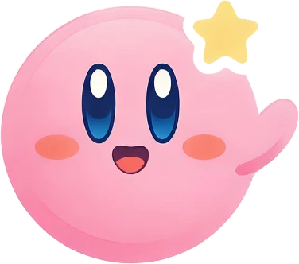

Огонь
Изрыгает пламя и превращается в огненный болид.
От: Хот Хэд
Маленький розовый герой с огромным аппетитом и ещё большим сердцем
Загружаем Кирби… 0%
😢 Не удалось загрузить 3D-модель.
Проверьте, что файлыassets/kirby.obj и assets/kirby.mtl на месте, и откройте сайт через веб-сервер (не file://). Подробности — в консоли (F12).
Крутите мышью или пальцем · колесо / щипок — масштаб
Видео assets/kirby_loop.mp4 не найдено.
Видео assets/kirby_camera.mp4 не найдено.
Кирби — жизнерадостный круглый герой с далёкой планеты Поп-Стар, живущий в мирной стране Дрим-Ленд. Он обожает вкусно поесть, крепко поспать и всегда готов броситься на помощь друзьям — даже если для этого придётся проглотить очередного злодея целиком.
Кирби — один из самых узнаваемых персонажей Nintendo. За свою историю он побывал в десятках игр самых разных жанров: платформерах, гонках, головоломках, пинболе и даже в игре про вязаный мир из ниток.
Дизайн Кирби — образец гениальной простоты: его можно нарисовать одним кругом и парой штрихов. Именно поэтому его невозможно спутать ни с кем другим.
Нежно-розовое тело — визитная карточка героя.
Тело-шарик, которое умеет надуваться, чтобы парить в воздухе.
Короткие округлые ручки без пальцев — но меч он держит уверенно.
Крупные красные ножки-ботинки, на которых он бодро топает.
Розовый румянец под глазами делает его вечно смущённо-милым.
Большие тёмно-синие глаза с бликами и крошечный улыбающийся рот.
📏 Согласно буклету к игре Kirby's Adventure, рост Кирби — всего около 20 см (8 дюймов).
Вдох
Кирби втягивает врага мощным потоком воздуха.
Глоток
Проглатывает противника целиком…
Копирование
…и получает его силу вместе с новой шапочкой!
Механика копирования появилась во второй игре — Kirby's Adventure (1993) — и с тех пор стала главной фишкой серии. Ещё Кирби умеет надуваться и летать, а проглоченного врага можно выплюнуть в виде звезды-снаряда.
Изрыгает пламя и превращается в огненный болид.
От: Хот ХэдЛедяное дыхание замораживает врагов в глыбы, которые можно пинать.
От: ЧиллиЗелёный колпак в стиле Линка и стремительные удары клинком.
От: Сорд НайтЭнергетический хлыст из искр, который бьёт сквозь стены.
От: Ваддл ДуСтановится неуязвимой тяжёлой глыбой и давит врагов сверху.
От: РокиВыпускает колючки во все стороны, как ёжик.
От: ТогезоПревращается в колесо и мчится, сбивая всех на пути.
От: ВилиОтражает атаки и создаёт зеркальные щиты и копии.
От: СимиррорБесполезная, но очаровательная способность: Кирби просто засыпает.
От: НоддиПовязка на лбу, серии ударов и фирменный «Хадокен»-стиль.
От: Наклз ДжоДебют Кирби. Короткая и добрая игра для новичков — на монохромном экране никто ещё не знал, что герой розовый.
Первая цветная игра и появление легендарного копирования способностей. Дебют Мета Рыцаря.
Сборник из нескольких игр в одной, кооператив для двоих и культовый режим «Revenge of Meta Knight».
Кирби — среди восьми стартовых бойцов первого «Смэша», созданного тем же Масахиро Сакураем.
Первый 2.5D-платформер серии, где способности можно было комбинировать.
Весь мир сшит из ниток и ткани, а Кирби превращается в пряжу.
Классическое приключение для четырёх игроков и первое появление Магалора.
Путешествие в небесное королевство Флоралия и битва с королевой Сектонией.
Кирби бросает врагам сердечки и превращает их в союзников.
Первая полноценная 3D-игра основной серии и самая продаваемая игра про Кирби. Новый трюк — «Набивка ртом»: Кирби проглатывает машину и сам становится ею.
Самопровозглашённый король Дрим-Ленда с огромным молотом. Был главным злодеем в первой игре, но со временем стал скорее вредным приятелем, который не раз сражался бок о бок с Кирби.
Загадочный фехтовальщик в маске с крыльями, похожими на крылья летучей мыши. Владеет мечом Галаксия и живёт по кодексу чести — даёт Кирби меч, чтобы поединок был честным.
Особый Ваддл Ди в синей бандане, сражающийся копьём. Помощник короля Дидиди и лучший друг Кирби — играбельный персонаж во многих играх серии.
Правительница небесного королевства Флоралия из игры Kirby: Triple Deluxe. Одержимая собственной красотой, она пыталась захватить Дрим-Ленд с помощью магического бобового стебля.
Этот сайт-презентация подготовлен как учебный проект по специальности 09.02.07 «Информационные системы и программирование».

Учебное заведение
г. Воркута, Республика Коми


Разработанная 3D-модель Кирби в формате OBJ/MTL универсальна и может быть использована в самых разных сферах — от 3D-печати до игровых движков.
Модель можно экспортировать в STL и распечатать на 3D-принтере — получится фигурка Кирби для коллекции или в подарок.
Импорт в Unity, Unreal Engine или Godot для использования в собственных играх — как персонаж, NPC или декорация уровня.
Размещение модели в дополненной реальности через WebXR или в VR-приложениях — Кирби «оживает» в реальном мире.
Основа для создания анимаций в Blender, Maya или Cinema 4D — можно сделать собственный мультфильм или кинематографичный ролик.
Встраивание в сайты через Three.js, как в этом проекте — интерактивный просмотр прямо в браузере без установки программ.
Учебный материал для изучения структуры полигональных сеток, UV-развёртки, текстурирования и работы с форматами OBJ/MTL.
Использование для создания мерча: брелоков, значков, наклеек, футболок — модель служит основой для дизайна продукции.
Быстрая визуализация идей: рендеры модели под разными углами и с разным освещением для презентаций и портфолио художника.
💡 Совет: перед использованием в игровом движке или для 3D-печати модель рекомендуется оптимизировать — уменьшить количество полигонов (retopology) и запечь текстуры в один атлас. Это ускорит рендер и снизит размер файла.
Японская серия называется «Hoshi no Kābī» (星のカービィ) — «Кирби со звезды».
Днём рождения Кирби считается 27 апреля 1992 года — дата выхода Kirby's Dream Land в Японии. В 2022 году серия отпраздновала 30-летие.
Кирби участвует в Super Smash Bros. с самой первой части (1999) — он входил в восьмёрку изначально доступных бойцов.
Изначально Кирби был временным спрайтом-заглушкой под рабочим именем «Попопо», а игра называлась «Twinkle Popo». Простой шарик понравился команде так, что его оставили.
На американской обложке Kirby's Dream Land герой был белым. Сигэру Миямото предлагал сделать его жёлтым, но Сакурай настоял на розовом.
По распространённой версии, имя Кирби дано в честь Джона Кирби — адвоката, выигравшего для Nintendo суд против Universal из-за Donkey Kong.
По мотивам игр сняли аниме «Hoshi no Kirby» (2001–2003) — 100 серий, в США оно шло как «Kirby: Right Back at Ya!».